Figure fig_ch01_p007_01 (Page 7)
Figure fig_ch01_p007_01 (Page 7)
 Figure fig_ch01_p012_01 (Page 12)
Figure fig_ch01_p012_01 (Page 12)
 Figure fig_ch01_p014_01 (Page 14)
Figure fig_ch01_p014_01 (Page 14)
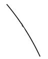
Figure fig_ch01_p015_01 (Page 15)
 Figure fig_ch01_p015_02 (Page 15)
Figure fig_ch01_p015_02 (Page 15)
 Figure fig_ch01_p016_01 (Page 16)
Figure fig_ch01_p016_01 (Page 16)
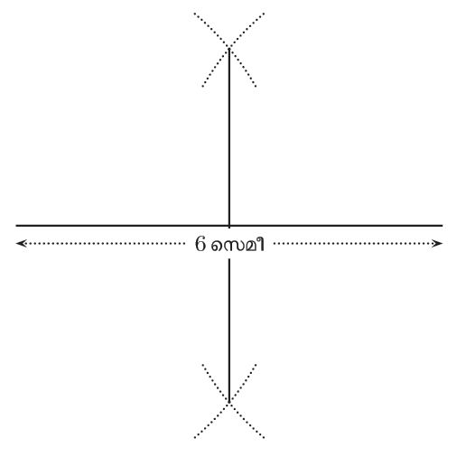
Figure fig_ch01_p017_01 (Page 17)
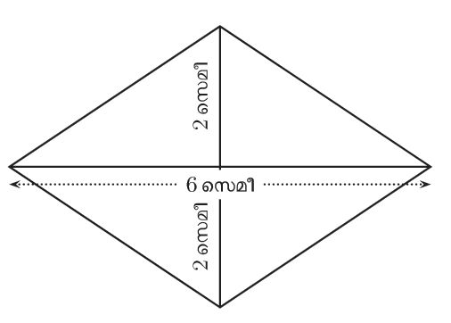
Figure fig_ch01_p018_01 (Page 18)
 Figure fig_ch01_p018_02 (Page 18)
Figure fig_ch01_p018_02 (Page 18)
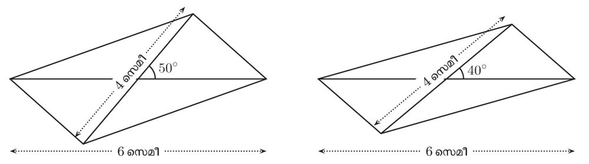
Figure fig_ch01_p019_01 (Page 19)
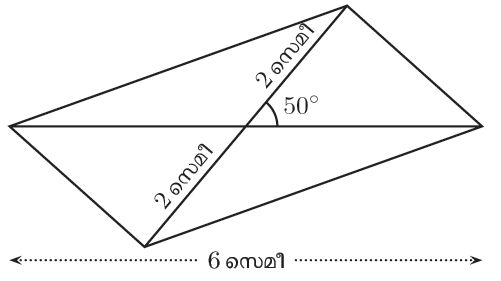
Figure fig_ch01_p019_02 (Page 19)
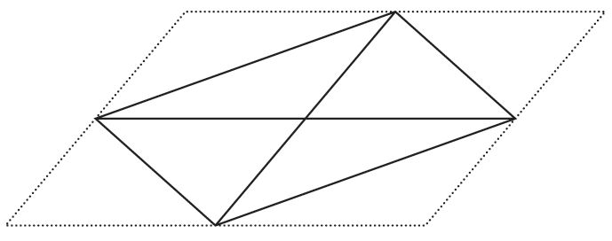
Figure fig_ch01_p019_03 (Page 19)
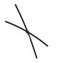
Figure fig_ch01_p020_01 (Page 20)
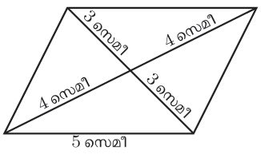
Figure fig_ch01_p021_01 (Page 21)
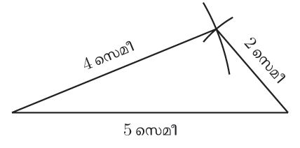
Figure fig_ch01_p021_02 (Page 21)
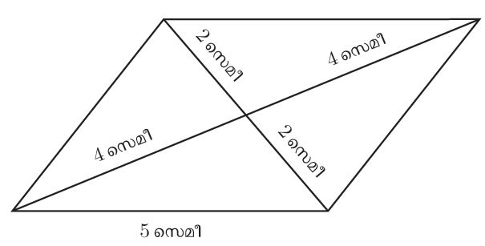
Figure fig_ch01_p021_03 (Page 21)
 Figure fig_ch01_p021_04 (Page 21)
Figure fig_ch01_p021_04 (Page 21)
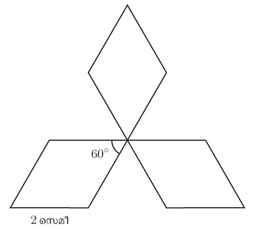
Figure fig_ch01_p022_01 (Page 22)
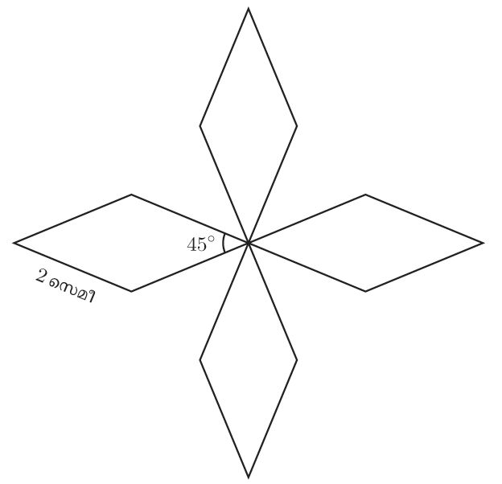
Figure fig_ch01_p022_02 (Page 22)
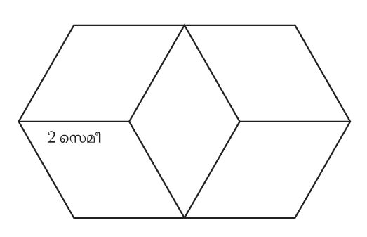
Figure fig_ch01_p022_03 (Page 22)
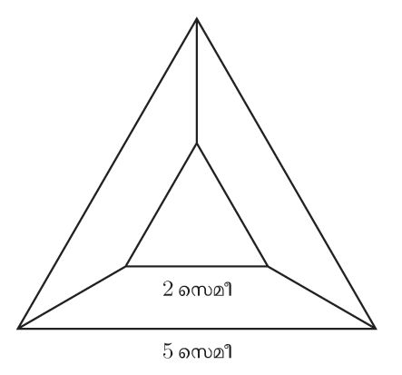
Figure fig_ch01_p028_01 (Page 28)
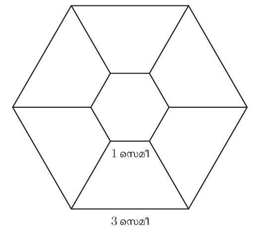
Figure fig_ch01_p028_02 (Page 28)
 Figure fig_ch01_p028_03 (Page 28)
Figure fig_ch01_p028_03 (Page 28)
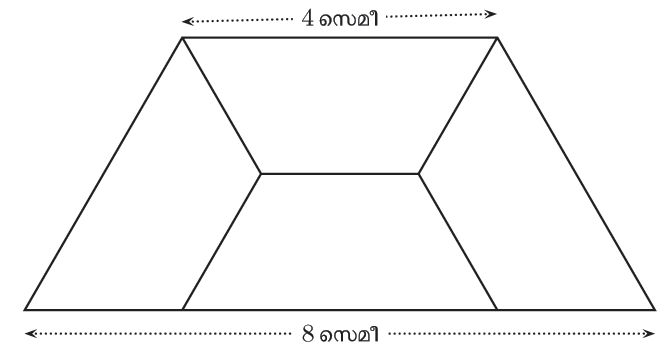
Figure fig_ch01_p029_01 (Page 29)
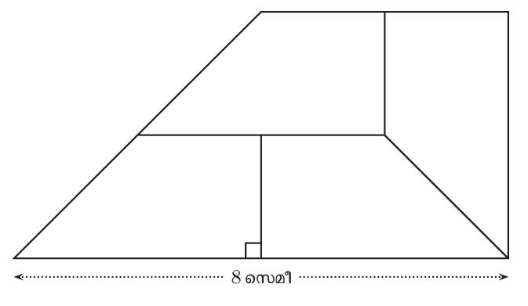
Figure fig_ch01_p029_02 (Page 29)
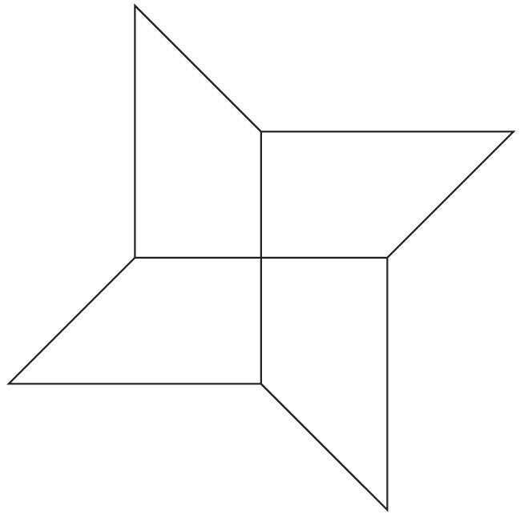
Figure fig_ch01_p029_03 (Page 29)
 Figure fig_ch01_p030_01 (Page 30)
Figure fig_ch01_p030_02 (Page 30)
Figure fig_ch01_p030_03 (Page 30)
Figure fig_ch01_p030_04 (Page 30)
Figure fig_ch01_p030_05 (Page 30)
Figure fig_ch01_p030_01 (Page 30)
Figure fig_ch01_p030_02 (Page 30)
Figure fig_ch01_p030_03 (Page 30)
Figure fig_ch01_p030_04 (Page 30)
Figure fig_ch01_p030_05 (Page 30)
 Figure fig_ch01_p031_01 (Page 31)
Figure fig_ch01_p031_01 (Page 31)
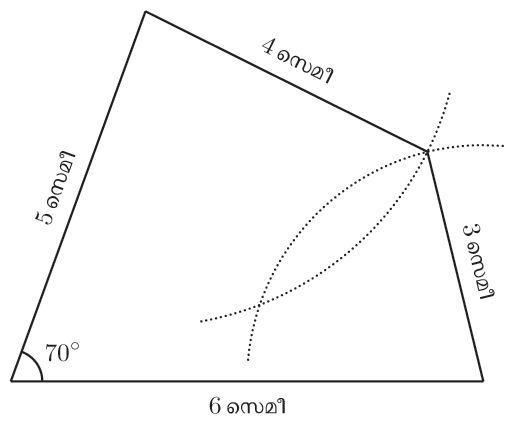
Figure fig_ch01_p031_02 (Page 31)
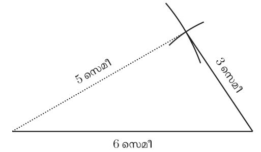
Figure fig_ch01_p031_03 (Page 31)
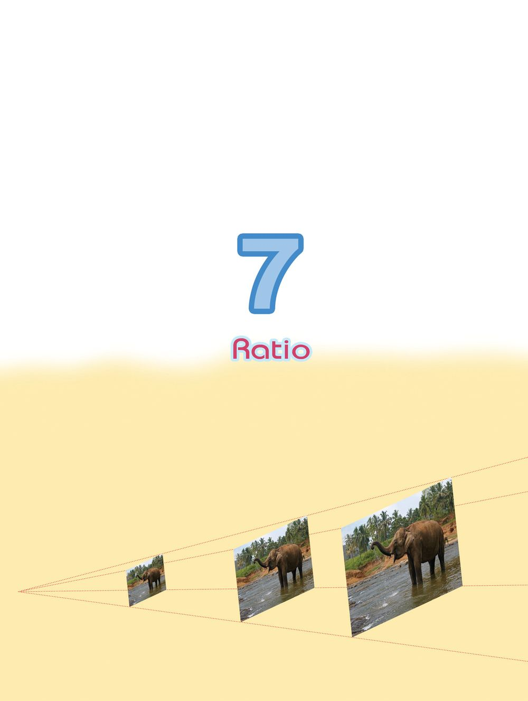
Figure fig_ch01_p033_01 (Page 33)
 Figure fig_ch01_p034_01 (Page 34)
Figure fig_ch01_p034_01 (Page 34)
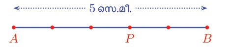
Figure fig_ch01_p034_02 (Page 34)
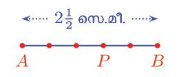
Figure fig_ch01_p035_01 (Page 35)
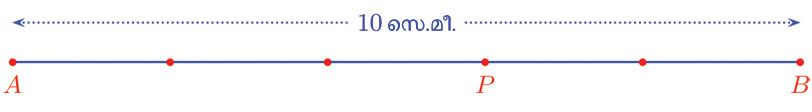
Figure fig_ch01_p035_02 (Page 35)
Figure fig_ch01_p035_03 (Page 35)
Figure fig_ch01_p037_01 (Page 37)
 Figure fig_ch01_p037_02 (Page 37)
Figure fig_ch01_p037_02 (Page 37)
 Figure fig_ch01_p038_01 (Page 38)
Figure fig_ch01_p038_02 (Page 38)
Figure fig_ch01_p038_01 (Page 38)
Figure fig_ch01_p038_02 (Page 38)
 Figure fig_ch01_p040_01 (Page 40)
Figure fig_ch01_p040_01 (Page 40)
 Figure fig_ch01_p040_02 (Page 40)
Figure fig_ch01_p040_02 (Page 40)
 Figure fig_ch01_p041_01 (Page 41)
Figure fig_ch01_p041_01 (Page 41)
 Figure fig_ch01_p041_02 (Page 41)
Figure fig_ch01_p042_01 (Page 42)
Figure fig_ch01_p042_02 (Page 42)
Figure fig_ch01_p041_02 (Page 41)
Figure fig_ch01_p042_01 (Page 42)
Figure fig_ch01_p042_02 (Page 42)
 Figure fig_ch01_p044_01 (Page 44)
Figure fig_ch01_p044_01 (Page 44)
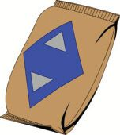
Figure fig_ch01_p044_02 (Page 44)
 Figure fig_ch01_p044_03 (Page 44)
Figure fig_ch01_p044_04 (Page 44)
Figure fig_ch01_p044_05 (Page 44)
Figure fig_ch01_p044_06 (Page 44)
Figure fig_ch01_p044_07 (Page 44)
Figure fig_ch01_p044_03 (Page 44)
Figure fig_ch01_p044_04 (Page 44)
Figure fig_ch01_p044_05 (Page 44)
Figure fig_ch01_p044_06 (Page 44)
Figure fig_ch01_p044_07 (Page 44)
 Figure fig_ch01_p045_01 (Page 45)
Figure fig_ch01_p045_01 (Page 45)
 Figure fig_ch01_p045_02 (Page 45)
Figure fig_ch01_p045_02 (Page 45)
 Figure fig_ch01_p046_01 (Page 46)
Figure fig_ch01_p046_01 (Page 46)
 Figure fig_ch01_p046_02 (Page 46)
Figure fig_ch01_p046_02 (Page 46)